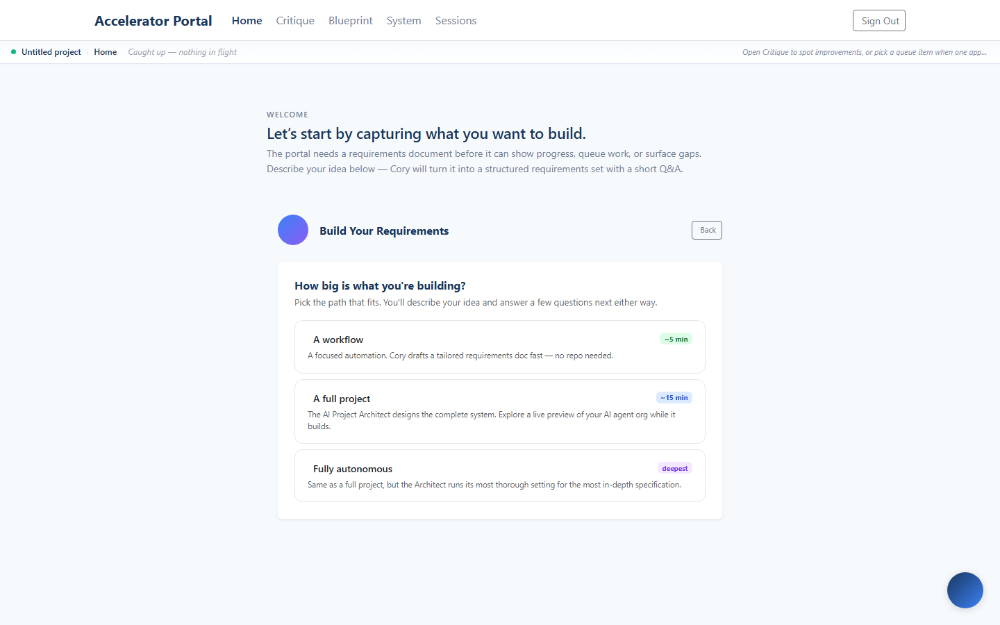
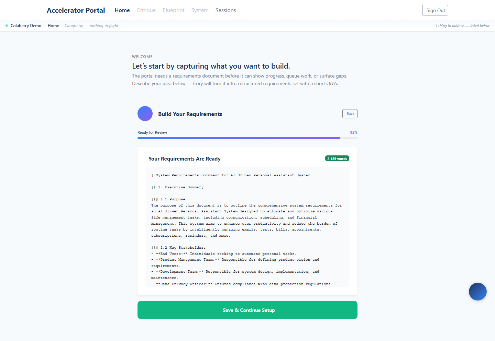
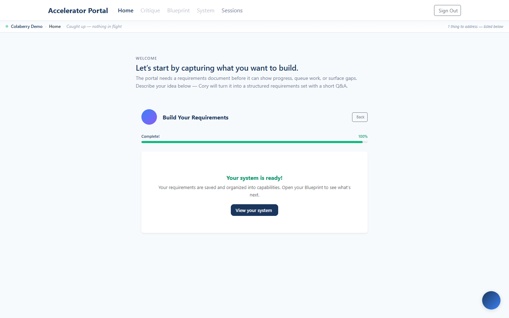
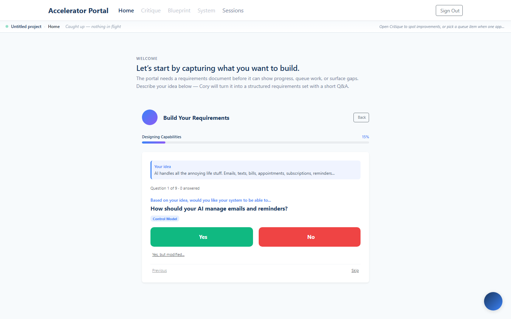
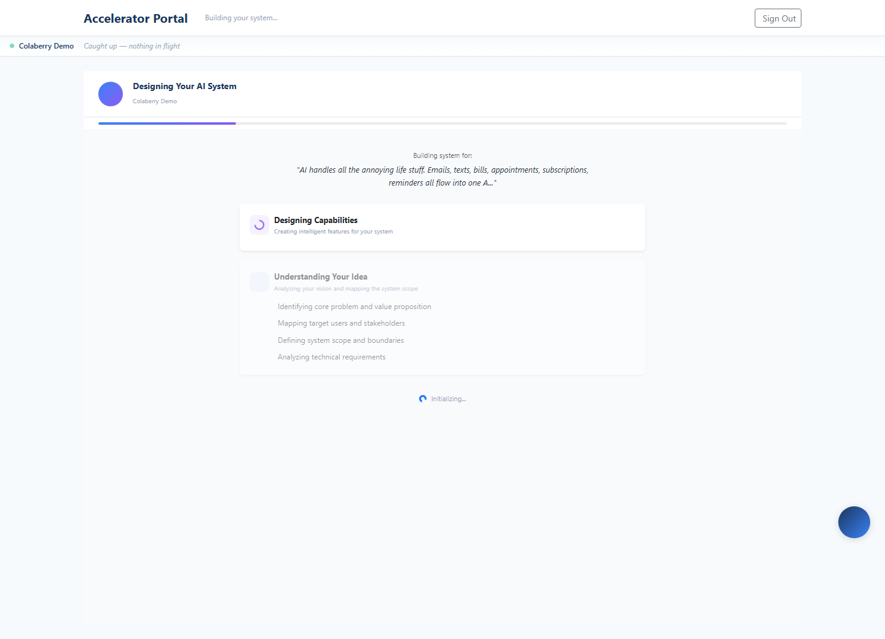
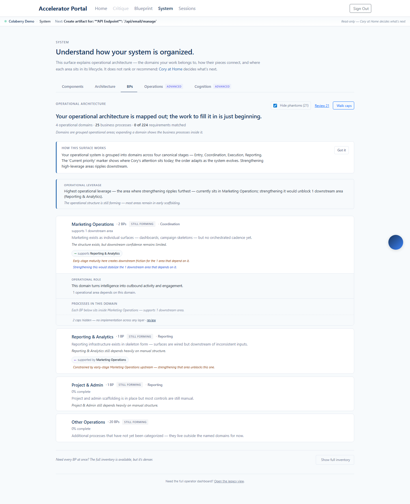
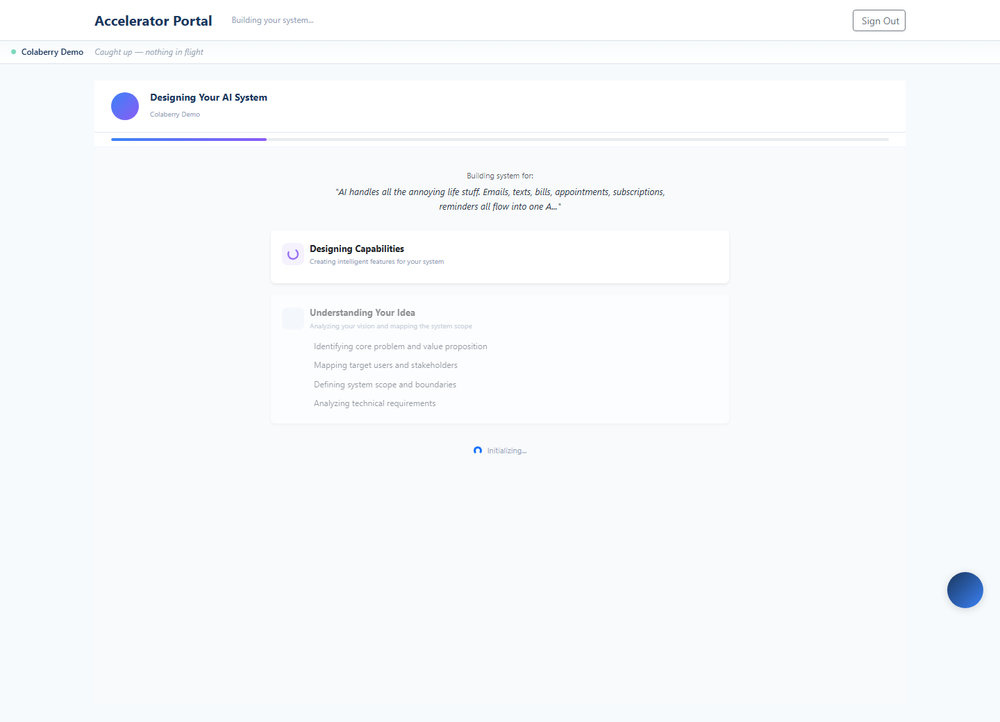
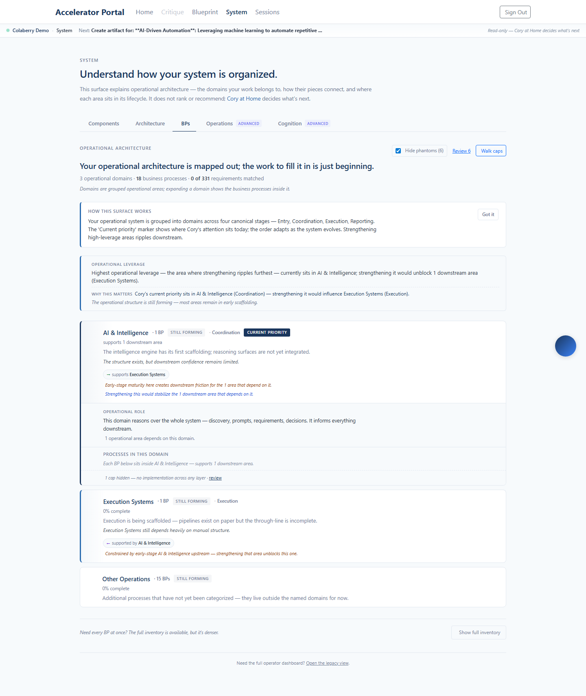

Production · same idea · headless E2E with timing
Build paths: how long each takes, end to end
Generated 2026-05-21T18:13:56.403Z · idea: "AI handles all the annoying life stuff" (personal-assistant workflow)
Side by side
| Path | Result | Total time | Capabilities | Requirements | Document | What runs |
|---|---|---|---|---|---|---|
| Workflow | PASS | 3.07 min | 8 | 201 | 2,189 words | Regular LLM + 2-pass · no repo · no demo |
| Full Project | PASS | 13.05 min | 41 | 395 | 14,981 words | Architect (professional) · repo · live demo |
| Fully Autonomous | PASS | 20.77 min | 54 | 331 | 14,896 words | Architect (autonomous/deepest) · repo · live demo |
Read in one line: Workflow is a ~3-minute, no-repo draft (~2.2K-word doc → 8 capabilities); Full Project and Fully Autonomous both produce a ~15K-word Architect document (≈7× Workflow), but take ~13 and ~21 minutes. The wait in the two Architect paths is almost entirely the
chapter_build phase — idea, questions, retrieval, and clustering are seconds to ~2 minutes.
Per-path breakdown
Workflow 3.07 min · 8 caps · 201 reqs
| Step | Duration | Share | |
|---|---|---|---|
| Load chooser | 5s | ✓ | |
| Choose tier + type idea | 0s | ✓ | |
| AI generates questions | 34s | ✓ | |
| Answer questions | 3s | ✓ | |
| Generate document (LLM, 2-pass) | 1m 46s | ✓ | |
| Save + build out (cluster) | 35s | ✓ |



Full Project 13.05 min · 41 caps · 395 reqs
| Step | Duration | Share | |
|---|---|---|---|
| Load chooser | 2s | ✓ | |
| Choose tier + type idea | 0s | ✓ | |
| AI generates questions | 27s | ✓ | |
| Answer questions | 3s | ✓ | |
| Connect repo + start build | 1s | ✓ | |
| Architect builds the document | 10m 47s | ✓ | |
| Retrieve doc + build out (cluster) | 1m 33s | ✓ |
Architect phases: feature_discovery @0.0m → outline_generation @0.3m → outline_approval @0.6m → chapter_build @0.8m → complete @10.8m



Fully Autonomous 20.77 min · 54 caps · 331 reqs
| Step | Duration | Share | |
|---|---|---|---|
| Load chooser | 1s | ✓ | |
| Choose tier + type idea | 0s | ✓ | |
| AI generates questions | 25s | ✓ | |
| Answer questions | 3s | ✓ | |
| Connect repo + start build | 1s | ✓ | |
| Architect builds the document | 18m 18s | ✓ | |
| Retrieve doc + build out (cluster) | 1m 49s | ✓ |
Architect phases: feature_discovery @0.0m → outline_generation @0.4m → outline_approval @0.6m → chapter_build @0.9m → complete @18.3m



What the numbers say
- Workflow ≈ 3 min. Two-pass generation (~1m45s) + no-repo build-out (~35s). A 2,189-word doc → 8 capabilities / 201 requirements. Good for a quick, tailored automation spec. (Previously broken — saved a doc but built out 0 capabilities; now fixed.)
- Full Project ≈ 13 min. ~11 min is the Architect writing chapters; idea→questions <1 min; retrieval + clustering ~1.5 min. 14,981-word doc → 41 capabilities / 395 requirements — far more than Workflow, as expected.
- Fully Autonomous ≈ 21 min. ~18 min of chapter writing → a 14,896-word doc → 54 capabilities / 331 requirements.
- The wait is the chapter phase. In both Architect paths the user is essentially watching chapters get written — which is exactly what the live preview demo is for.
- Honest caveat on "Autonomous": right now it produces about the same document size as Full (~15K words) — it yields more capabilities (54 vs 41) but not a longer doc, because "autonomous" is currently just a depth instruction to the same Architect blueprint. A genuinely longer/deeper autonomous doc needs a distinct blueprint setting on the Architect (advisor) side.
Raw data: docs/screenshots/2026-05-21-path-timing/timings.json. Reproduce: node scripts/documentBuildPaths.js then node scripts/buildPathTimingReport.js.